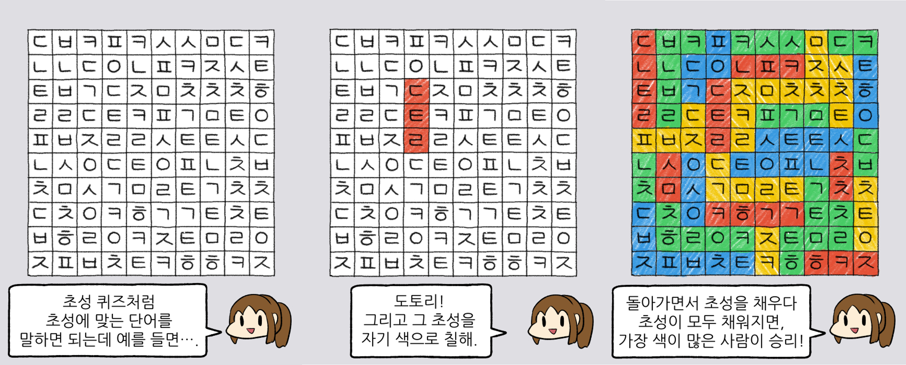

도움말

초성 땅따먹기는 '자작 보드게임 동아리'라는 웹툰에서 등장하는 보드게임 중 하나입니다.
돌아가면서 랜덤한 자음으로 채워진 표에서 일렬로 연결된 초성을 선택하고,
선택된 초성에 맞는 단어를 입력하면 칸의 수만큼 점수를 얻습니다.
더 이상 채울 수 있은 칸이 없다면 게임이 종료됩니다.
첫 화면(~setting.html)에서 표의 가로/세로 칸 수와 플레이할 사람 수를 정할 수 있습니다.
이후 PLAY! 버튼을 누르면 게임 화면(~main.html)으로 이동합니다.
게임 화면의 표에서 원하는 자음을 드래그로 선택할 수 있습니다.
다른 유저가 차지한 칸은 선택할 수 없습니다. 즉, 내가 차지한 칸이나 빈 칸만 선택 가능합니다.
왼쪽에는 색깔, 점수, 남은 시간 등 플레이어의 정보가 나타납니다.
각 턴마다 30초 안에 단어를 입력하거나 SKIP 버튼으로 차례를 넘겨야 하며,
30초가 지나면 점수가 1점 깎이고 차례가 넘어갑니다.
일렬로 자음을 선택하면 단어를 입력할 수 있는 박스가 생깁니다.
박스에 자음이 일치하는 올바른 단어를 입력하고 엔터키를 누르거나 '입력'버튼을 누르면 해당 칸들을 차지하고 점수를 얻습니다.
단어 중간에 띄어쓰기가 있거나, 드래그한 역순으로 자음이 배치되어 있어도 됩니다.
예를 들어, 드래그로 'ㅅㄹㄱ'를 선택하였다면
'시래기', '선린 고', '가로수' 등을 모두 입력할 수 있습니다.